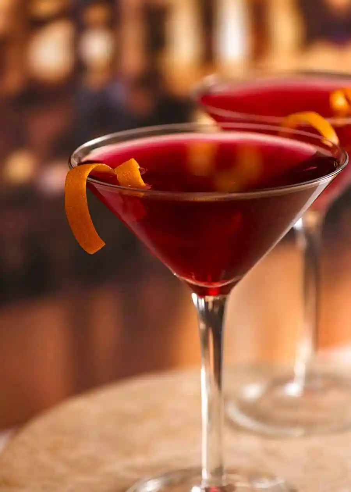

Cosmopolitan

This is a civil cocktail mon cherie!
Ingredients for 1 serving
- 1 (1.5) fluid ounce) jigger vodka
- 1/2 fluid ounce cointreau
- 1 teaspoon fresh lime juice
- 1 1/2 fluid ounces cranberry juice
- 1 twist lime zest, garnish
Directions
- Pour all the ingredients into a shaker with lots of ice. Shake vigorously for several seconds and strain into a cocktail glass. Garnish with a lime twist.